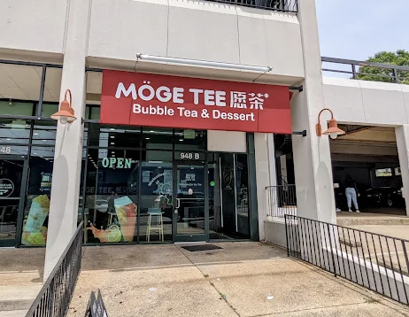
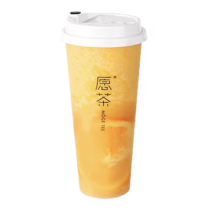
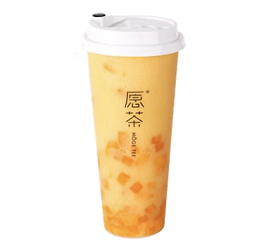
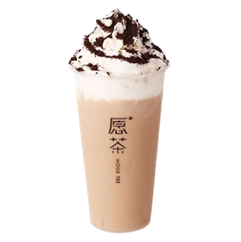

Happy Bowl is a wonderful Asian Fusion restaurant with options from China, Japan, and more. They accept UNCG Flex, and they also have a mobile ordering platform.
Hibachi Steak & Shrimp
This entrée is full of well-cooked, seasoned, delicious meat, along with a side of veggie fried rice. Definitely try this with their various sauces if you can.
Spring Rolls
This lovely appetizer is full of veggies wrapped in a crunchy fried lumpia wrapper. These are great with duck sauce, and come with some by default.
Orange Chicken
This entrée is a serving of delightfully sweet chicken on a bed of white rice. This option is a bit dry, so definitely get a free water or other drink with this meal.
If you've got a dry meal or just some spare time, definitely stop by Moge Tee! They offer many different drink options, mainly milk tea, fruit tea, and slushies. Their drinks come with or without boba toppings. When ordering, I recommend asking the sweetness of the drinks to be reduced on anything fruit-flavored.
(Store Image Credit: Jordan Burleson)


Orange Tea Slush
This cold slushie drink is a great refresher, filled with tangy flavor. This drink includes both orange juice in the ingredients, but also slices of orange which infuse fresh flavor as you drink.

Mango Tea Slush
This chilly drink is an incredibly sweet mango slushie with pieces of mango in it for flavoring. The straws are big enough and the cubes of mango are small enough that you can eat them through the straw, which makes for a unique but good texture for the drink.

Oreo Milk Tea
This milk-based sweet tea is topped with cream and Oreo crumbles, making a very dessert-y drink. The Oreo bits add a wonderful chocolate taste to the already-delicious tea.
Insomnia Cookies
Sunday: 12:00 PM-1:00 AM Monday: 11:00 AM-1:00 AM Tuesday: 11:00 AM-1:00 AM Wednesday: 11:00 AM - 1:00 AM Thursday: 11:00 AM - 3:00 AM Friday: 11:00 AM - 3:00 AM Saturday: 12:00 PM - 3:00 AMAddress: 425 Tate St, Greensboro, NC
Insomnia Cookies is a nation-wide chain of dessert bakeries with locations at both UNCG and NC A&T. They offer cookies, brownies, and other baked dessert options. My favorites are below!
(Store Image Credit: Ebony M.)
Cookies 'n Cream Cookie
This cookie has white chocolate chips mixed in with Oreo cookie pieces, making a delightful mashup. The cookie part itself has a soft texture, and the Oreo pieces add a lovely crunch.
Sugar Cookie
Despite looking like a normal sugar cookie, I can say without a doubt this was the best sugar cookie I have ever had. It's buttery smooth, and they are always served warm. They are larger than a standard sugar cookie however, so don't order multiple without knowing their size.
Double Chocolate Mint Cookie
This cookie has a chocolate base with both mint chips and M&M pieces added in. The taste is similar to Andes Mints, but the texture is softer and melty. This cookie is very tasty, but the M&M bits get melty, so be careful not to dye your fingers/clothes.

 Hibachi Steak & Shrimp
Hibachi Steak & Shrimp Spring Rolls
Spring Rolls Orange Chicken
Orange Chicken